地政学
ベルリンは冷戦の前線から再統一ドイツの首都へ変わり、連邦議会、首相府、大使館、記念碑が欧州統合と東西の記憶を結びます。ウクライナ戦争、難民、エネルギー政策も街の政治感覚に重なっています。外交も映す街です。

🇩🇪 ドイツ / ヨーロッパ / World City Atlas
分断と再統一、連邦政治、研究と創造産業、移民地区、記憶の公共空間が重なるドイツの首都です。
都市の骨格
シュプレー川、壁跡、Sバーン環状線、広い公園、連邦政府地区が、歴史の重さと日常の余白を同じ地図に置きます。
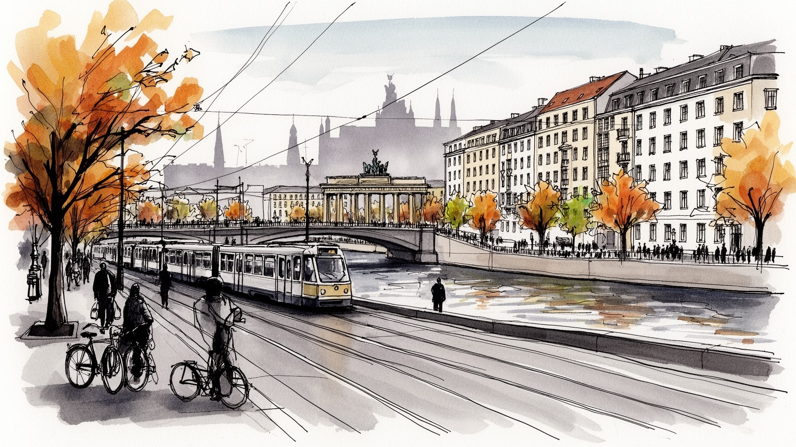
ベルリンは冷戦の前線から再統一ドイツの首都へ変わり、連邦議会、首相府、大使館、記念碑が欧州統合と東西の記憶を結びます。ウクライナ戦争、難民、エネルギー政策も街の政治感覚に重なっています。外交も映す街です。
政府、研究機関、大学、IT、映画、音楽、観光、福祉が雇用を支え、製造業都市とは異なる柔らかな経済を作ります。高技能移民と低賃金サービス労働、家賃上昇が同時に見える首都圏です。生活費も重い都市です。課題です。
博物館島、劇場、クラブ、移民地区、ユダヤ史、イスラム礼拝、プロテスタント教会、無宗教の生活が近くに並びます。記憶を展示し、祝祭を続け、差別に向き合う文化都市として歩ける街です。祈りも続く深い場です。
広い公園、湖、集合住宅、蚤の市、カフェ、自転車道、地下鉄が日常を支え、観光客は壁跡、門、博物館、クラブを巡ります。住宅不足と観光化も生活の実感に直結し、住民の余白をどう守るかが今も大きな課題です。
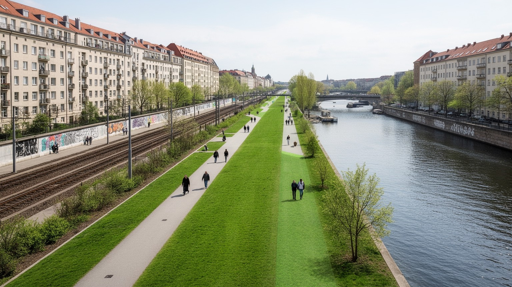
ベルリンの都市地理は、川や鉄道だけでなく、かつて街を裂いた壁の跡を重ねて読む必要があります。シュプレー川は王宮、博物館島、政府地区、再開発地を結ぶ水の軸であり、Sバーン環状線は中心と郊外の境界感覚をつきます。ですが冷戦期には、東西ベルリンの境界が住まい、職場、家族、墓地、駅、広場を断ち切り、都市の移動を政治そのものにしました。現在の壁跡は遊歩道、記念施設、空地、公園、開発地として残り、観光客の歩く線であると同時に、住民が記憶を通って通勤する線でもあります。再統一後の都市は空白を埋めるように建設を進めたが、東西の住宅形態、賃金、所有、行政経験の差は完全には消えていありません。広い道路、戦災後の空地、社会主義期の団地、西側の商業地区、近年の高層開発が隣り合うため、ベルリンは一つの中心へ収束する都市ではなく、歴史の断層を抱えた多中心都市として見えます。壁を失った都市は自由になったが、その自由は地価上昇と観光化も呼び込みました。ベルリンを歩くことは、境界が消えた後に何が残り、誰がそこに住めるのかを確かめる行為です。駅名、橋、空き地、団地の配置は、地図上の線が消えても人の記憶と不動産価値に残ることを示しています。都市の形は過去の政治を静かに保存しています。古い境界をたどる道は、通勤路にも散歩道にもなり、歴史が生活の足元に残ります。
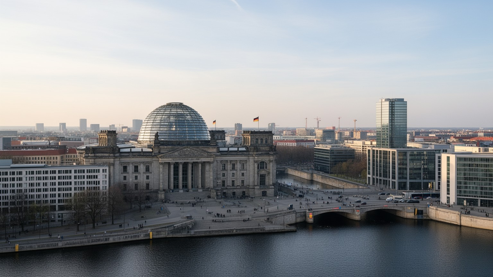
ベルリンはドイツ最大の経済都市ではありませんが、連邦政治の中心であることが都市の重心を決めています。連邦議会、首相府、省庁、大使館、報道機関、シンクタンク、市民団体が政府地区に集まり、政策、予算、移民、気候、軍事、欧州連合との関係をめぐる議論が日常的に交わされます。旧帝国議会議事堂の建物を再利用した連邦議会は、破壊、独裁、分断、再統一を経た民主主義の象徴であり、ガラスのドームは公開性を演出します。一方で、首都の政治は常に抗議の対象でもあります。気候運動、住宅運動、農業政策への不満、反戦集会、極右への抗議、難民支援の行動は、広場や大通りを政治空間へ変えます。ベルリンの首都性は、権力がただ威厳を示すことではなく、市民が制度へ異議を唱える場所を持つことにもあります。連邦制の国で首都だけがすべてを決めるわけではありませんため、州政府や地方都市との調整も重要になります。ベルリンを読むには、建物の配置だけでなく、記者会見、デモ、警備、公開討論、選挙ポスターが街路にどう現れるかを見る必要があります。政治は観光名所の背景ではなく、日々の公共交通、学校、住宅、エネルギー価格に直結する生活の制度です。首都が旧西ドイツのボンから移ったことも、再統一国家の自己理解を示します。ベルリンの政治空間は、過去の責任と現在の合意形成を同時に見せる舞台です。
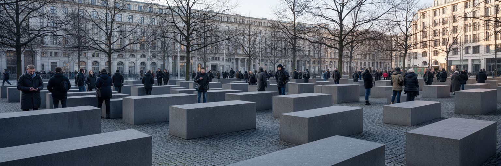
ベルリンの公共空間には、ナチズム、ホロコースト、戦争、冷戦、秘密警察、分断、移民差別の記憶が刻まれています。ブランデンブルク門や博物館島の華やかさだけを見れば首都の威信が先に立ちますが、街路には虐殺されたユダヤ人の記念碑、迫害された人々の小さな記銘板、壁記念施設、収容所へ続く鉄道の記憶が散らばります。ベルリンの記憶文化は、過去を誇るためではなく、加害を隠さず制度と教育へ組み込む努力として発展してきました。学校教育、博物館、記念式典、アーカイブ、市民団体の活動は、歴史を遠い時代に閉じ込めません。もちろん記憶の扱いは一枚岩ではなく、どの被害を中心に置くか、植民地主義や移民差別をどう含めるか、反ユダヤ主義とイスラム嫌悪をどう同時に扱うかをめぐる議論もあります。観光客が記念碑を訪れることは重要ですが、写真の背景として消費するだけでは意味が薄れます。子どもが学校で記念碑を巡り、高齢者が分断期の体験を語る場も、都市の記憶を支えます。記憶は石碑ではなく、現在の民主主義、少数者保護、表現の自由を支える緊張した実践です。小さな敷石の記銘板を踏まないように歩く感覚は、壮大な記念碑とは違う倫理を住民に求めます。日常の足元に歴史を置くことが、この都市の記憶文化を強くしています。沈黙と説明の距離を測る場所でもあります。
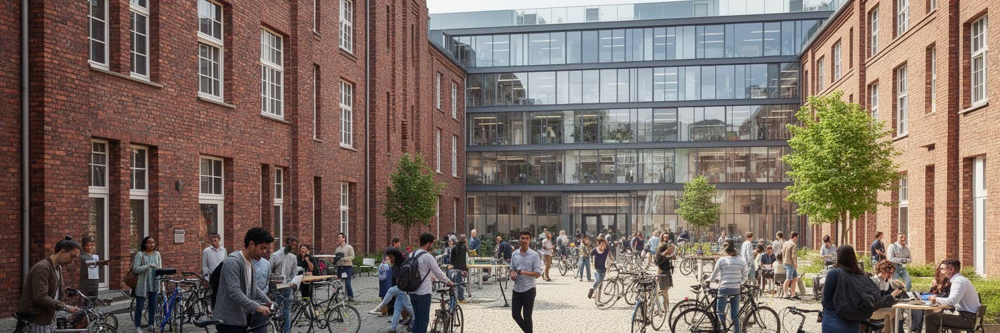
ベルリンの産業は、ライン川流域や南ドイツの製造業集積とは違う性格を持ちます。連邦政府、大学、研究機関、医療、IT、デザイン、ゲーム、映画、音楽、観光、福祉が混ざり、比較的若い人材と国際的な移住者を引き寄せてきました。フンボルト大学、自由大学、工科大学、研究所、病院、企業の開発拠点は、公共研究と民間創業を近づけます。壁崩壊後の空き空間と安い家賃は、かつて芸術家や小規模事業者に余地を与え、のちにスタートアップや国際企業の進出を促しました。ですが成功は新しい矛盾も生みます。英語で働ける高技能職が増える一方、配送、清掃、介護、飲食、宿泊、警備の労働条件は不安定になりやすいです。企業価値や投資額が語られるほど、家賃、保育、ビザ、医療、言語支援が働く人の現実を左右します。ベルリン経済の魅力は、硬い企業城下町ではなく、研究、公共部門、創造産業、社会運動が混ざる柔軟さにあります。しかし柔軟さが低賃金や短期契約の言い換えになれば、都市の自由は一部の人だけのものになります。研究都市としての強さを保つには、技術者だけでなく看護師、保育士、清掃員、学生が住み続けられる条件も欠かせません。公的研究費、欧州連合の助成、病院の臨床現場、移民起業家の小さな店は、都市経済を別々の方向から支えています。数字の成長より、異なる仕事が共存できる厚みが重要です。
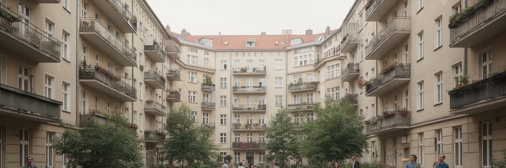
ベルリンの生活を語るうえで、住宅問題は避けられません。かつてのベルリンは、他の欧州大都市に比べて家賃が低く、学生、芸術家、移民、低所得者が中心近くに住める余地を持っていました。再統一後の空き家、工場跡、広い公営住宅、東西の制度差は、独特の緩さを生みました。しかし国際投資、観光、人口増加、スタートアップの集積、短期賃貸の拡大は、地区ごとの家賃を押し上げ、住民の退去や商店の入れ替わりを引き起こしています。クロイツベルク、ノイケルン、プレンツラウアー・ベルクのような地区では、移民の食堂、古いバー、子育て世帯、新しいカフェ、外国人専門職が近接し、誰の街なのかをめぐる緊張が日常化します。住宅運動は家賃規制、公営住宅、巨大不動産会社の扱い、住民参加をめぐって政治を動かしてきました。住宅は市場の商品であると同時に、学校、友人、仕事、医療、礼拝、買い物を支える生活基盤です。ベルリンの自由な雰囲気は、中心近くに多様な人が住めることから生まれた部分が大きいです。家賃上昇でその層が押し出されるなら、都市の魅力そのものが失われます。住宅を読むことは、ベルリンが誰のための首都であり続けるのかを問うことです。古い中庭型住宅の改修は快適さを増すが、改修費が家賃へ転嫁されれば住民の入れ替わりを早めます。住まいの安定は、文化や政治参加を可能にする前提でもあります。
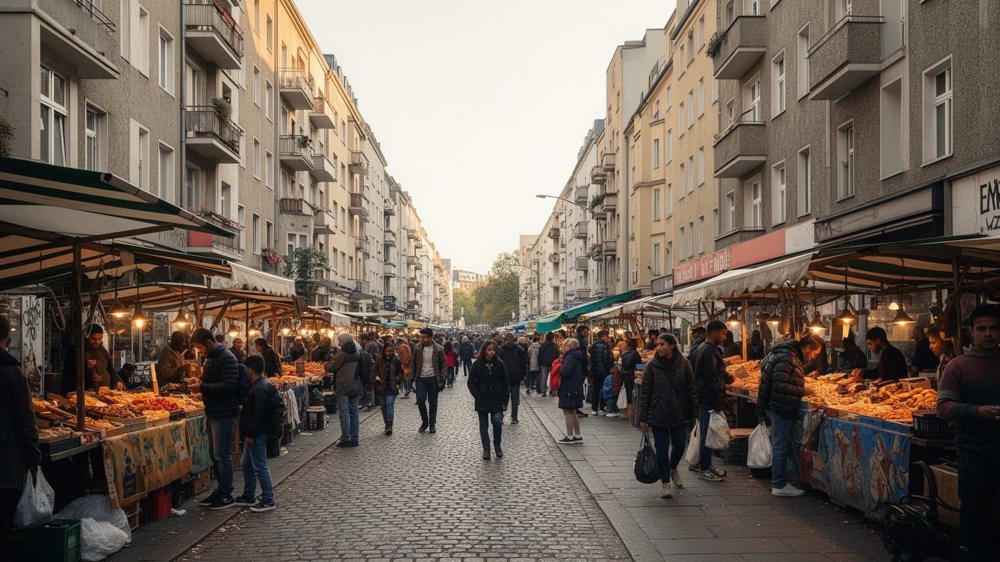
ベルリンはドイツ語だけでできた都市ではありません。トルコ系、アラブ系、東欧系、ロシア語圏、ベトナム系、アフリカ系、近年のシリアやウクライナからの人々など、多様な住民が地区ごとの生活文化をつくっています。クロイツベルクやノイケルンでは、モスク、パン屋、八百屋、理髪店、送金店、学校、青年センターが移民家族の日常を支え、屋台や食堂は観光客にも都市の魅力として消費されます。ケバブ、ベトナム料理、アラブ菓子、週末市場の野菜や香辛料は、買い物と路上経済を通じて移民の記憶を運びます。ですが多文化性は華やかな食の選択肢だけではありません。言語、資格認定、在留資格、差別、警察との関係、学校での進路選択、失業、住宅探しは、生活の可能性を細かく分けます。第二世代、第三世代の若者はドイツ社会の一部として育ちながら、名前や肌の色、宗教によって外部者扱いされることがあります。イスラム礼拝、ユダヤ共同体、キリスト教会、世俗的な生活が近接する都市では、宗教の自由と安全対策も重要になります。多様性を都市の力にするには、文化を楽しむだけでなく、教育、住宅、雇用、差別への対応を同じ重さで見る必要があります。子どもの通う学校、役所の窓口、病院の通訳、地域の祭りは、統合が抽象語ではなく毎日の手続きであることを示します。隣人として暮らす時間が都市の多文化性を支えています。
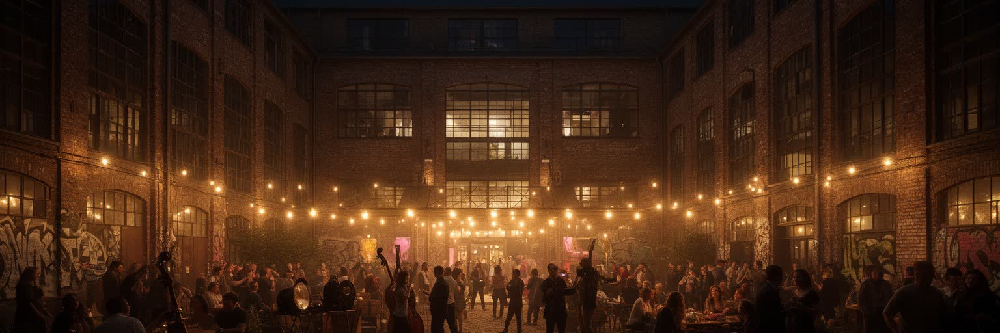
ベルリンの文化は、博物館島や国立劇場だけでなく、クラブ、ライブハウス、小劇場、映画館、ギャラリー、アトリエ、独立書店、路上の音楽によって支えられます。壁崩壊後の空き建物や工場跡は、テクノ文化、クィア文化、実験的な芸術の場になり、都市の国際的なイメージを大きく変えました。夜のベルリンは自由の象徴として語られますが、その自由は防音、薬物、性の安全、警備、近隣住民の騒音、家賃、労働条件と常に交渉しています。クラブやバーで働く人、音響技術者、清掃員、タクシー運転手、深夜交通、救急医療は、夜の経済を現実に動かす基盤です。ヘルタやウニオンの試合日には、駅前のビール、屋台、応援歌が地区の帰属意識を強め、文化の時間を昼にも広げます。ベルリンの文化政策は、歴史的な記憶施設と同じくらい、現代の小さな表現空間を守れるかを問われています。芸術都市の価値は、有名な美術館の数だけでは測れません。若い作り手が失敗し、少数者が自分の身体と言葉で集まり、商業化される前の表現を試せる余白があるかどうかで決まります。夜の自由は都市の魅力であると同時に、誰が安全に参加できるのかを問う公共課題でもあります。深夜の列車の音、入口の選別、近隣との合意、薬物被害への支援まで含めて初めて、夜の文化は持続します。自由は支える制度を必要とします。
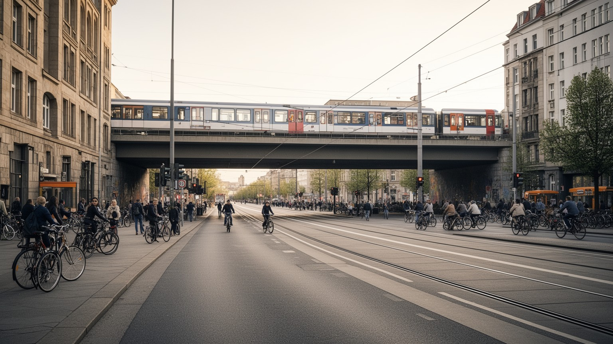
ベルリンの移動は、Uバーン、Sバーン、トラム、バス、地域鉄道、自転車、徒歩が組み合わさって成り立ちます。Sバーン環状線は都市の内外を感覚的に分け、放射状の路線は郊外住宅地やブランデンブルク州の町を中心部へ結びます。東ベルリン側に多いトラム、西側に発達した地下鉄、再統一後に整えられた中央駅や政府地区の交通は、分断の歴史をインフラにも残しています。自転車は日常の重要な手段であり、広い道路や公園、運河沿いの道は移動を柔らかくするが、車との事故、冬の寒さ、路面の悪さ、工事区間の危険もあります。空港がブランデンブルクへ移ったことで、国際移動と郊外鉄道の結びつきも変化しました。交通の便利さは観光客に分かりやすいが、住民にとっては家賃が上がる中心から遠く住むほど、乗換、運賃、夜間の帰宅、安全性が生活を左右します。ベルリンは車中心の巨大首都ではなく、公共交通と自転車で多くの生活を組み立てられる都市です。しかし気候対策として車を減らすには、郊外や低所得者にも使いやすい運賃、バリアフリー、深夜交通、保育や買い物を考えた動線が必要になります。移動の公平さは、都市の自由を測る具体的な尺度です。駅のエレベーター、ベビーカーの乗り換え、夜勤後の帰宅、雨の日の自転車道まで見れば、移動は単なる路線図ではありません。日々の細部が都市の使いやすさを決めています。
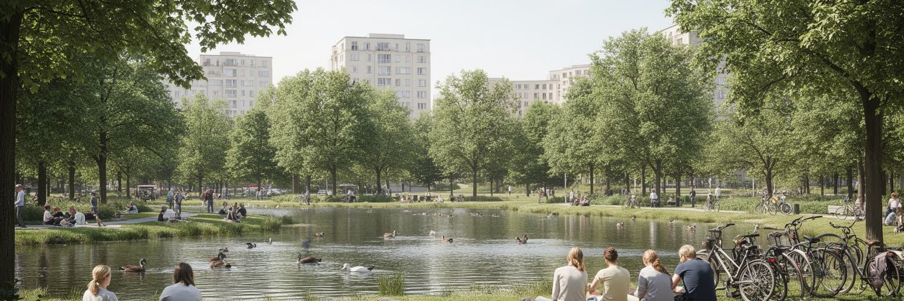
ベルリンは首都でありながら、広い公園、森、湖、運河、空地の存在感が大きい都市です。ティーアガルテン、テンペルホーフの旧空港跡、シュプレー川沿い、グルーネヴァルト方面の緑地、ヴァンゼー周辺の水辺は、住民に散歩、日光浴、スポーツ、ピクニック、政治集会、音楽、休息の場を与えます。戦争と分断、空港、軍用地、工場跡が残した空白は、再開発の対象であると同時に、都市の息継ぎの場所でもあります。夏の湖畔はベルリンの生活文化を強く映し、子どもの遊び、高齢者の散歩、学生の集まり、週末のバーベキューが同じ草地に並びます。一方で、緑地の近さは住宅価格を押し上げ、人気地区では利用者の増加が騒音、ごみ、自然保護、住民の静けさをめぐる摩擦を生みます。気候変動で熱波や干ばつが強まるほど、公園と湖は単なる余暇ではなく、都市を冷やし、雨水を受け、健康を守るインフラになります。ベルリンの余白は、無計画な空き地ではなく、歴史が作った傷と公共政策が守る空間の組み合わせです。都市が成長しても、誰もが無料で座り、歩き、水辺に近づける場所を残せるかが、ベルリンの住みやすさを左右します。公園の草の匂い、湖水の冷たさ、自転車のベル、蚤の市のざわめきは、記念碑とは違う都市の感覚を作ります。公共の余白は都市の民主性を測る場所です。混雑や騒音を調整しながら開かれた空間を守ることが、成長する首都の重要な仕事になります。
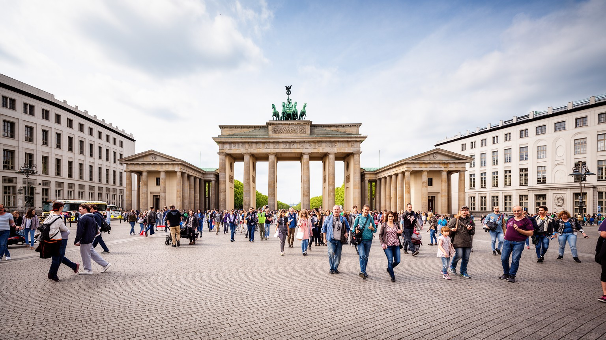
ベルリン観光は、ブランデンブルク門、連邦議会、博物館島、ベルリン大聖堂、壁跡、イーストサイドギャラリー、チェックポイント、ユダヤ博物館、ポツダム広場、クラブ、蚤の市を短い距離でつなぎます。観光客は近代史を歩ける都市としてベルリンを訪れ、戦争、分断、再統一、欧州政治の記憶を街路で体験します。ですが観光は、記憶を学ぶ機会であると同時に、歴史を消費しやすい商品へ変える危険も持ちます。壁の断片や冷戦の記号が土産物になる時、そこで命を失った人や監視された人の経験が薄れることがあります。博物館島は世界遺産として美しいが、収蔵品の由来や植民地主義の問題も抱えます。観光経済はホテル、飲食、交通、案内、清掃、警備、文化施設の雇用を生む一方、短期滞在者向けの商業が住民の生活店を押し出すこともあります。ベルリンの名所を巡るには、写真を撮るだけでなく、何が保存され、何が再建され、何が失われたのかを読む必要があります。都市の魅力は、記念碑の数ではなく、過去の暴力と現在の自由を同じ公共空間で考えられる点にあります。観光が生活と記憶を尊重できるかどうかが、ベルリンの受け入れ都市としての成熟を決めます。案内板の多言語化、静かな追悼の場でのマナー、地元商店への配慮は、小さく見えて都市観光の質を左右します。歴史都市を訪れることは、消費ではなく学習の態度も求めます。
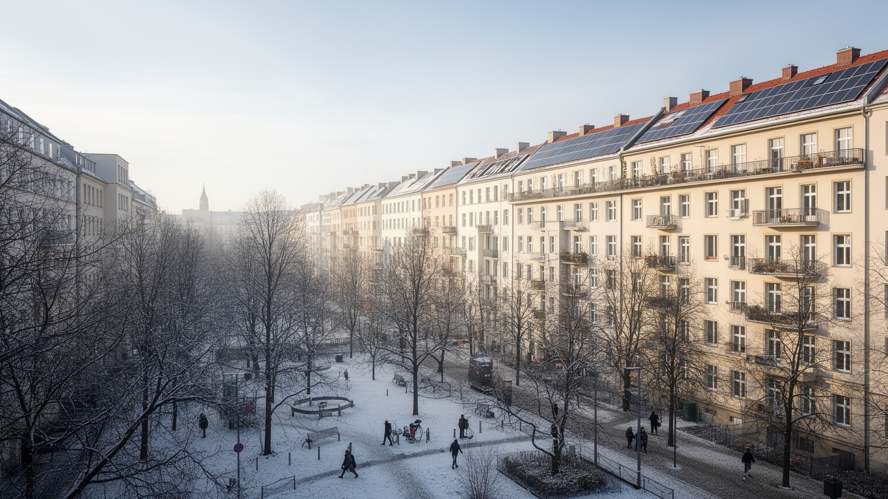
ベルリンの気候は温帯で、冬は灰色の空と寒さが長く、夏は比較的短いが近年は熱波や乾燥が目立ちます。古い集合住宅では断熱、暖房費、換気、湿気が生活の質を左右し、エネルギー価格の上昇は低所得世帯に重くのしかかります。ドイツの脱原発、再生可能エネルギー、天然ガス依存、ウクライナ戦争後のエネルギー安全保障は、ベルリンの家庭と政治を直結させました。気候政策は国会で議論される大きな制度であると同時に、アパートの改修費、家賃への転嫁、公共交通料金、自転車道、街路樹、学校の暑さ対策として住民に届きます。夏の公園と湖は涼を与えるが、熱に弱い高齢者、屋外労働者、狭い住宅に住む人ほど負担を受けやすいです。雨水管理や緑地保全は、見た目の環境美化ではなく、都市の健康を守る基盤です。ベルリンは環境意識の高い都市として知られるが、政策の理想と日々の生活費が衝突する場面も多いです。気候対策が公平でなければ、緑の都市は豊かな人の特権になってしまいます。住宅改修、地域熱供給、公共交通、緑地、社会保障を結びつけて考えることが、寒冷で歴史的建物の多い首都には欠かせません。暖房の効率化は環境政策であると同時に、家計と健康の政策でもあります。気候の都市問題は、議会の目標値より先に台所と寝室で実感されます。古い建物を壊さず改修する工夫も、記憶と脱炭素を両立させる課題です。
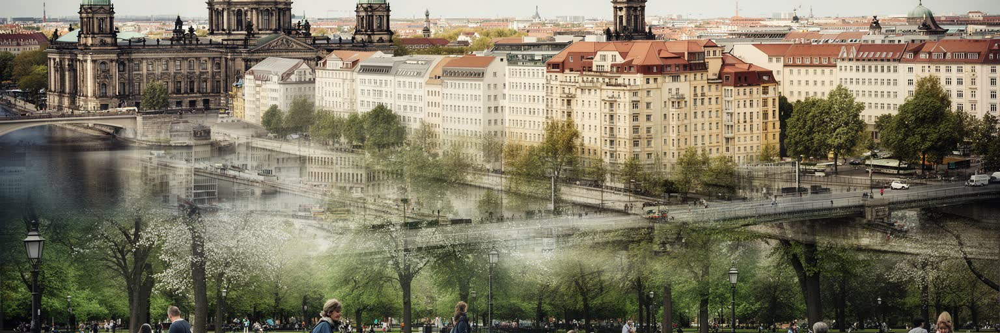
ベルリンは、GDPの大きさだけで順位づけると見落とされやすい種類の世界都市です。連邦政治、戦争責任、ホロコースト記憶、冷戦の分断、再統一、移民地区、クラブ文化、大学研究、住宅運動、公園と湖、気候政策が、比較的低い建物の街並みと広い公共空間の中で重なっています。金融や製造業の圧倒的な中心ではないことは弱さでもありますが、国家の記憶を扱い、欧州の民主主義、難民、エネルギー、軍事、文化の議論を受け止める場としての重要性は大きいです。観光客には壁跡や門、博物館、夜の文化が強く見えますが、住民にとっては家賃、通勤、学校、言語、差別、暖房費、騒音、緑地の使い方が日々の都市を決めます。ベルリンの自由は、空き地や安い家賃が作った余白から育ちましたが、その余白は市場化によって細くなっています。だからこそ、記憶を守るだけでなく、現在の多様な住民が住み続けられる条件を守ることが都市の核心になります。ベルリンを読むとは、過去の境界が消えた後に、新しい境界が住宅、所得、国籍、言語、宗教、文化消費の中にどう現れているかを見ることです。ケバブの匂い、駅前市場、球場の歌声、深夜の低音、湖畔の静けさも同じ地図に入ります。大きな権力の都市でありながら、草地や中庭、夜の小さな会場が重要な意味を持ちます。そこにベルリンらしい政治性と生活感が宿っています。